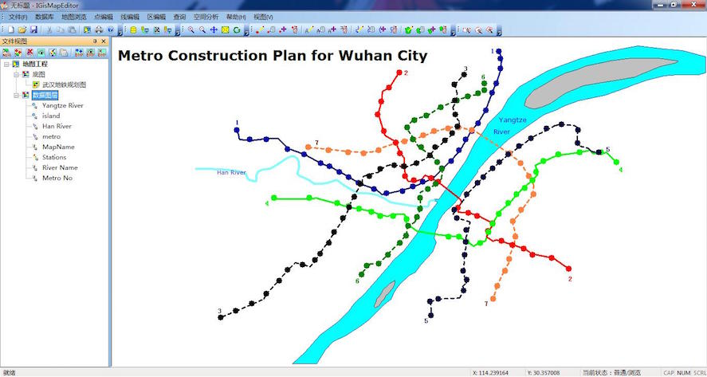

Ming Chi's Project Experience
"Explore, discover, and learn."
Description
This project is mainly about distributed database query. The restful server accepts a query from the web client, parse it into standard presto query, execute it and the result will be sent back to client and displayed as a table, or the result can be stored in the distributed database system as a new data source. Data are transferred in JSON format. Server programmed in Java.
main contributor

Description
This project is aimed at building a game-like android app for java learning. Users take each test to check their understanding about each topic. The users can track the progress and see how they are doing in each section. The back-end is a very complex adaptive learning system and actually the json data is huge. This app only uses few of them.
back-end data simplifier & extractor

Description
This is a self-made app, not a class project. When using Microsoft Windows, I discovered that the snapshot tool that the system provided is inconvenient for use. So I designed this program to solve this problem by optimizing continuous shooting operation, providing fast hotkeys and fast saving prosess. UI framework is MFC.
The user can save the selected area on the screen as an image file or to the clipboard. When doing continuous shooting, the program can save the images to the folder set by the user and name each image automatically, avoiding many operations. Also, the app allows user to set an area of interest on the screen and only save the selected area. For example, you can set area of interest to the browser display region.
author

Auto-name effect:

Description
In this project, a prototype GIS system with map layout and zoom functions, database functions and the map editing functions are implemented. The map layers (raster type or vector type) are overlayed and form a map. In this application, the user can create/connect to/disconnect to a geo-database, view or edit map layers (both vector layers and raster layers), and do searches. Project files are available and the map can be printed as an image.
UI framework: MFC.
Database: Microsoft SQLServer.
main designer and contributor (UI, map layout and zoom functions)

Description
As the key data of GIS field, vector geo-spatial data is of great importance. To protect its copyright, watermarking vector geo-spatial data is an effective method. Two algorithms are implemented, a direct-insert algorithm and a DFT(Discrete Fourier Transform)-based algorithm.
By converting watermark image's pixel data to a binary sequence, we obtain our watermark sequence of zeros and ones. Then we select a subset of coordinates from the vector data and change those coordinates according to the bit depth set, the binary sequence is embedded in the vector data.
The program is designed as a plug-in package for MapGIS 10 platform. The plug-in contains two DLLs. The C# DLL contains the UI part and the C++ DLL contains the algorithm part.
author
Main UI Based on Mapgis10The left part of it is the map layer tree-control. The right part of it is the database view. The middle part is the map viewer.
Inserting Watermark

Verifying Watermark
Progress Window (Multi-Threading)

Description
This is a self-made app, not a class project. A traditional calculator requires the user to type grade and credit of each course and to choose an internal algorism. Yet my calculator accepts profiles which contains GPA definitions. After defining the first time, the user can save the definition as a file and they can load this file directly next time.
Also, my calculator accepts TXT file containing academic record. As long as the user provides a TXT file with two columns (credit and grade) separated by Tab, the program can load the file and the grades and credits are added to the table. It’s easy and efficient. Users do not need to manually input (manual input is still supported, yet "load" function is more preferred).(To generate this kind of TXT file quickly, you can paste the transcript onto an Excel sheet; then you delete all columns except the two containing grade and credits and all titles; full select the remaining and paste them onto a TXT.)
UI framework is MFC.
author